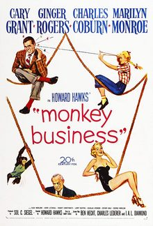

Monkey Business
Starring: Cary Grant, Ginger Rogers, Marilyn Monroe
Director: Howard Hawks
Writer: Ben Hecht, I. A. L. Diamond, Charles Lederer
Producer: Sol C. Siegel
Monkey Business is a 1952 American screwball comedy film directed by Howard Hawks and starring Cary Grant, Ginger Rogers, Charles Coburn, and Marilyn Monroe. To avoid confusion with the unrelated 1931 Marx Brothers film of the same name, the film is sometimes billed as Howard Hawks' Monkey Business.
Previous Showings
5 Runs • 4 Festivals
Original Billings: 1 run (October 26, 1952)
All runs on record (5):
- October 26, 1952 (Sunday - Thursday)Cary Grant, Ginger Rogers, Marilyn Monroe
- July 17 - 20, 2007Summer 2007 63 films in 12 weeks, including 22 films starring Fred Astairew/ Carefree
- June 15 - 17, 2012Howard Hawksw/ Gentlemen Prefer Blondes
- August 5 - 6, 2023Summer 2023: The Best of Cary Grant and Alfred Hitchcockw/ Arsenic and Old Lace
- July 15 - 16, 2026Summer 2026 including the Films of Marilyn Monroew/ The Major and the Minor